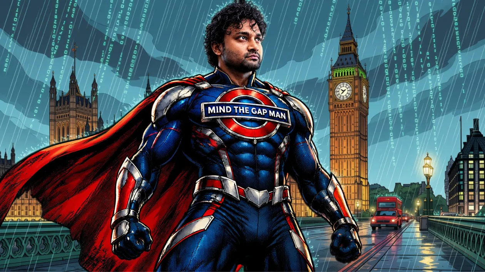
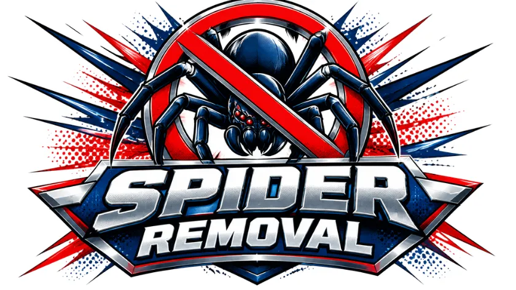
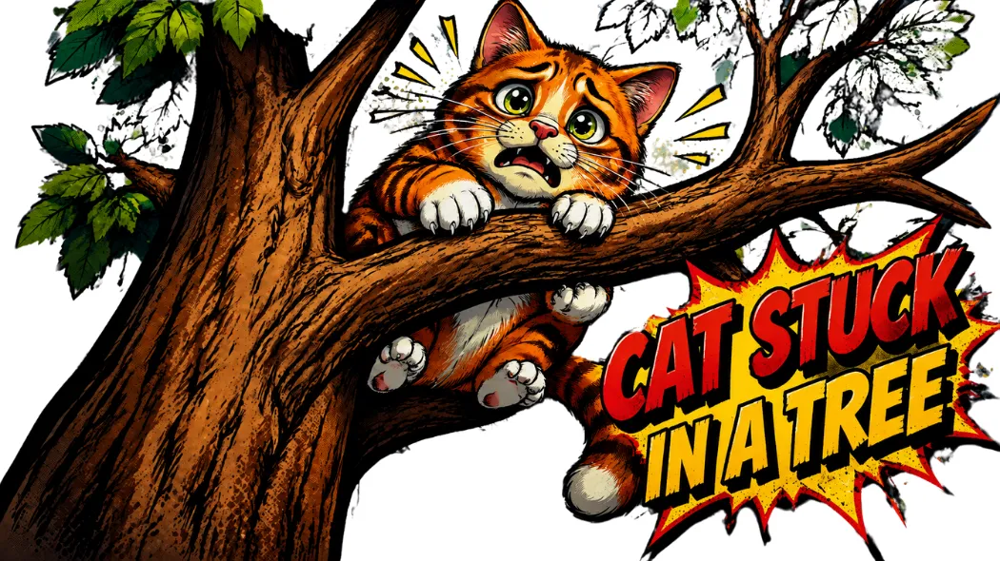
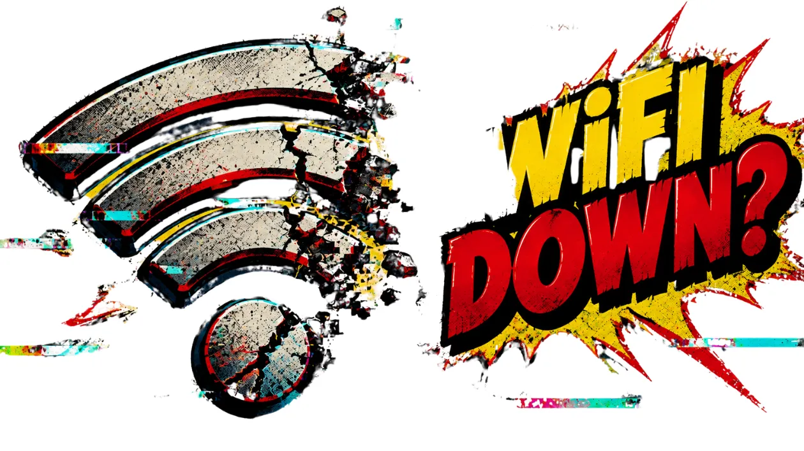
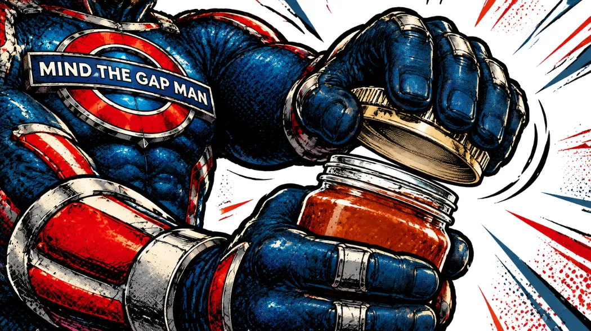

Origin Story

Bitten by code... it happened at 2 AM on a stalled Northern line train. One weary bootcamp student, one laptop at 3% battery, and one radioactive semicolon that leapt off the screen and sank its teeth into his thumb. By the time the driver announced "a short delay due to a signal failure", everything had changed.
Now he sees the glowing Matrix-style code running behind London: Oyster readers, traffic lights, pedestrian crossings and every Wi-Fi router from Ealing to Upminster. He can bend it, debug it and occasionally turn it off and on again. With great power comes great responsibility, so he chose to use his gifts for good. At very reasonable rates.
Superpowers & Weaknesses
- Superpowers
- Turns every traffic light green (only in emergencies, honest)
- Restores Wi-Fi with a single dramatic stare
- Can tap in at any Oyster reader on the first try
- Fully understands every Tube announcement, even the crackly ones
- Reaches the platform before the doors finish closing
- Weaknesses
- Will not fight south of Zone 4 after 9 PM
- Powerless against escalators that are "temporarily out of service"
- Cannot resist a Greggs sausage roll, even mid-rescue
- Must stand on the right. Always. No exceptions.
- Cape loses all aerodynamics in London drizzle
Services





I can be your Hero... and unlike most heroes, I take bookings. Whether it is an eight-legged lodger in the bath, a lid that will not budge or a villain cackling over the Thames, there is a rescue plan for every budget.
- Bronze £19 Spider Removal & Jar Opening
- Silver £49 Queue Jumping, Wi-Fi Fixing & Cat-in-a-Tree retrieval
- Gold £199 Full Arch-Nemesis Defeat